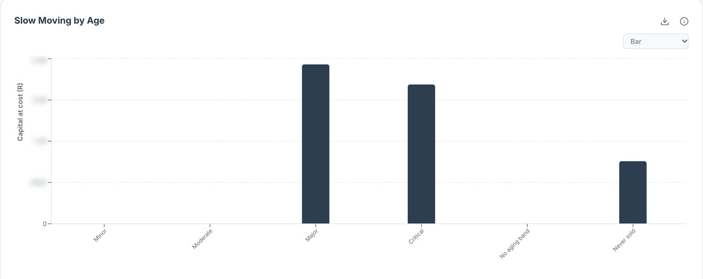
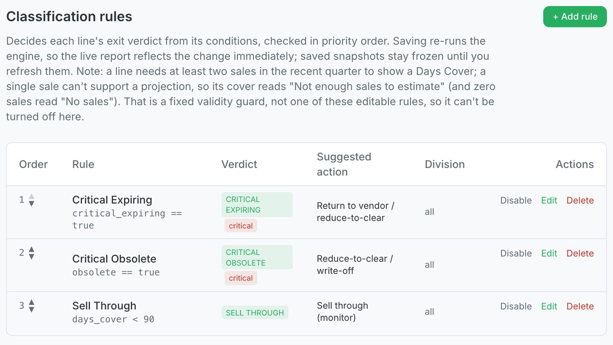

Every inventory decision your team makes, graded
Send us the data your systems already export, whether you make it, move it or sell it. VendIQ grades each call your team made about what you hold against rules you set, shows the better call where there was one, and checks on the next data drop whether it worked.

From the VendIQ console. Money figures are blurred.
Someone pulls the extracts. Someone cleans up a product code that reads four different ways across three systems. Someone joins it all together in a spreadsheet. By the time it is done, the moment to act on half of it has passed.
That work comes round again every cycle, and it lands on the people who should be making the decisions.
Ten jobs that stop being jobs
- Takes your raw export in, however it arrives, and a re-send never counts twice
- Cleans up product naming and codes, and maps your locations
- Joins what moved to what you hold, by product and location
- Checks every total back to your source, to the cent
- Blocks the report if anything does not tie
- Scores every line you hold against your live rules
- Grades every decision against the rule it should be judged by
- Ranks the result by rand at risk, not alphabetically
- Produces the report on the schedule you set
- Grades every past decision again when new data lands
01 · The work
The weekly spreadsheet, off your team
The people who should be making the decisions spend their week assembling data. VendIQ takes that work off them.
Send your data the way it arrives. Messy is fine: cleaning it up is the job. The ten jobs listed here run on the schedule you choose, and nobody has to start them.
Scheduled reports are made and kept ready to download today. Sending them straight to your team by email is the next step we are building.
What your team decided
Every call your team made about what you hold, graded against the rule it should be judged by, with the evidence behind the grade.
What we would do instead
Where the call was not the best one, the better action, the reason for it, and the money at stake.
What if
Move a rule and every figure is worked out again, so you see what a policy costs before you sign it off.
What happened next
On the next data drop, each decision is graded again: what recovered, what reduced, what stalled, what was written off.
02 · The grade
Was it the best call?
Most inventory reports tell you what happened. VendIQ goes one step further and grades the decisions that came out of it. Four answers come back every time your data lands.
- No figure is shown without the rule it was measured against
- What we expect to recover and what actually moved are kept apart
- Nobody on your team fills in a form to say what they did
That last point is what keeps the grading going when people get busy. Your team's actions turn up in your next data export, and VendIQ reads them there, next to what it recommended.

From the VendIQ console: the rules a report is judged by.
03 · The rules
The rules are yours
What counts as slow. What counts as critical. How long a decision can wait before it is overdue. Every limit VendIQ judges by is written down where your people can read it and change it. When someone disagrees with a call, they change the rule instead of arguing with a black box.
- Change a rule and the answer changes, with the change recorded
- Where we work from an assumption, the report says so on the page
- VendIQ never quietly retunes its own rules
The grades build up evidence for or against each rule over time. Your people decide when that evidence is strong enough to change one.
Our advice was right
The action was taken and the line moved.
Your team was right, and we were not
They overrode the recommendation, and the outcome shows they were right to.
The action was taken and it still did not work
It was discounted, moved, returned or reworked, and it sat there anyway.
04 · The scorecard
It tells you when it was wrong
Most systems tell you what happened. Some tell you what to do. Very few come back later and say they got it wrong. VendIQ grades its own advice on every data drop and puts all three outcomes in front of you.
The third row is why the first two are worth trusting. Anyone who only shows you their wins is showing you a selection. We do not ask you to take a recovery figure on our word. You watch the grades, cycle after cycle, on your own numbers.
The re-grading runs today. The plain-language read-out of it, so the person who owns the decision sees “advised, actioned, did not move” as a headline instead of a row in a table, is being finished now.
The decisions your team makes every week
Three areas with one method underneath, whether what you hold is raw material and spares in a plant, goods in a warehouse, or finished product on a shelf.
- Availability gaps. Which lines should be available at a location and are not.
- Adding and dropping a line. What a new line takes volume from, and what picks up the volume when one goes, measured from your own history.
- Rate of sale or use. What moves or gets used, and how fast, by location and product group.
- Forecasting. Where demand is heading and what that means for what you hold.
- Slow moving. Lines losing pace while there is still margin to protect.
- Exit. What should come out of the range, and what it is worth.
- Obsolete. What has already stopped moving, and how much money is tied up in it.
This is where we start, not where we stop. If your people take the same decision over and over, there is data behind it and a rule it should be judged by, we can build a model for it.
A wrong number never reaches you
A grade is only as good as the figures under it. This is the part we build first, and the part we are happy to be judged on.
Checked to the cent, or it does not go out
Every total is checked back to your own source figures along three separate routes. If any of them disagree, the report is blocked. We tested this by planting a one-cent error in the data, and the check stopped the report.
The AI writes sentences, not numbers
A language model is used in one place only: turning figures that have already been checked into plain sentences. It does no maths. A separate check rejects the whole paragraph if it holds a single number that cannot be traced back to source.
Your data sits in its own database
Each client has a separate database with its own credentials, never stored next to or reachable from anyone else’s. We prove that with a test, not a promise. What VendIQ learns from your outcomes stays with you. There is no shared model trained across clients.
We never touch your systems
Nothing writes back to your systems. Nobody on our side gets a login to any of them, and there is no integration project for IT to own. You can switch VendIQ off with an email.
One export, and a place to start
We need two things from you: what moved (sold, shipped or used), and what you hold at each location for every active line. Not only the slow or discontinued ones.
Here is why the second one matters. With movement alone, VendIQ can tell you what to do about inventory that is already a problem. With what you hold across every active line, it can point to the lines that are becoming a problem while there is still margin to protect. That is the difference between clean-up and early warning, and it costs you an export.
Choose where to start
A few product groups, one site or one division. Start narrow and prove it on your own numbers.
Send your data as it is
What moved and what you hold, by location. Unpolished is fine.
Agree the rules and the goals
What counts as slow, critical or overdue in your business.
Get the first graded decisions back
Then widen it across the business at the pace you choose.
From yes to fully live takes about six months: set-up, a pilot on the product groups you chose, then the roll-out. By the end, the rules, the schedule and the grades are all yours.
Priced on what you start with
VendIQ is set up on your data, so the price is worked out on it too. Tell us what you carry and where you want to start, and we will come back with a figure before you commit to anything.
A quote built on your product groups.
- A set-up fee to get the models running on the product groups you choose
- A monthly fee that grows only as you add product groups
- No seats to buy and nothing to install
- Your data in its own database, owned by you
More product groups mean more data, more computing and more of our time, which is why the price follows the product groups you choose. Pricing and operational terms for your engagement are set out in your service agreement at the time of quotation. Data is handled under our Privacy Policy and POPIA. VendIQ terms apply.
What is built, and what is not
If a supplier will not tell you what they have not built, ask what that says about the rest. Here is our list.
| Grading every inventory decision against your rules | Live |
| The better call and the money at stake | Live |
| Reports made on your schedule, ready to download | Live |
| Re-grading past decisions on every data drop Runs today. The plain-language read-out is being finished. | Being built |
| Sending reports and alerts to your team by email Until then, someone collects the report. | Being built |
| Small, low-value decisions taken for you, inside limits you set Ships switched off. Every action logged and reversible. | Planned |
| The return document for your supplier, ready for your team to send | Planned |
What VendIQ does not do
- It holds no market, consumer or competitor data. It tells you what is happening inside your business, not what is trending in your market.
- It does not model bills of materials or work in progress, which is where a manufacturer’s money often gets stuck.
- It does not run your planning, and it takes no decision on your behalf today.
Who it is not for
If you want the longest feature list on the market, buy that. VendIQ is narrow and deep. It suits a business that holds inventory, whether it makes it or sells it, already has reports it does not fully trust, and has good people spending their week assembling data instead of deciding.
Start with one area. Watch the grades.
Tell us what you carry and where you want to start. We will show you the decisions your team made, graded against rules you agree, and come back on the next data drop to show you what happened.
Pricing on request: a set-up fee, then a monthly fee by the number of product groups you run. Already a client? Sign in to VendIQ. Terms apply.